7. Evidenčné projekty
Na vytvorenie a editovanie evidenčných projektov ako aj následne vytváranie interných ŽoP v ISPO potrebujeme pracovnú pozíciu Editor ŽoP a projektu.
7.1) Vytvorenie evidenčného projektu
V ľavom paneli klikneme na sekciu Projekty. Zobrazí sa zoznam všetkých typov projektov v ISPO pod daným orgánom. Pre vytvorenie nového evidenčného projektu klikneme na tlačidlo Nový evidenčný projekt v pravom hornom rohu.
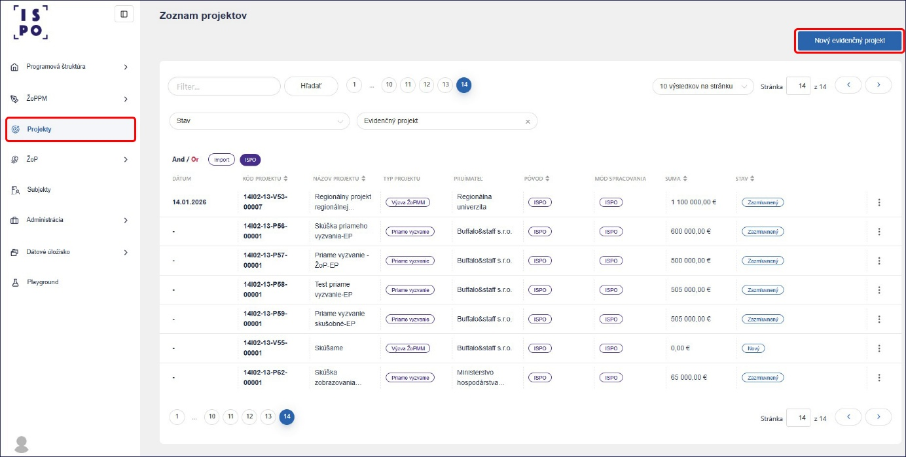
Najskôr vyplníme polia Opatrenie a Vykonávateľ. Pole Kód projektu systém automaticky vygeneruje podľa príručky k úložisku NIKA v zložení:
Číslo komponentu -> veľké I/R -> číslo investície/reformy -> pomlčka -> číslo vykonávateľa -> pomlčka -> veľké E a poradové číslo evidenčného projektu
Kód projektu je možné editovať. Následne vyplníme aj Názov projektu a vyberieme relevantný stav projektu.
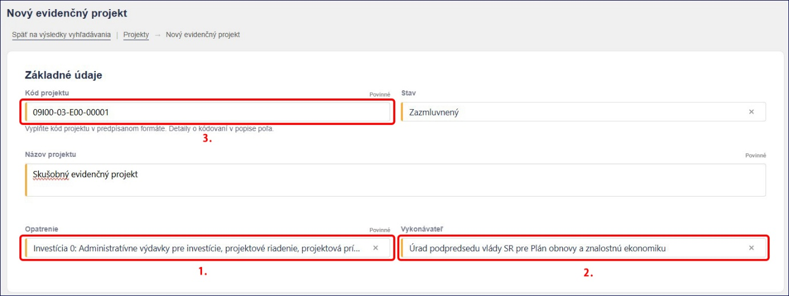
V časti Výdavky môžeme vyplniť polia pre sumy ako Suma z Plánu obnovy bez DPH, Čiastka DPH z Plánu obnovy, Suma vlastných zdrojov žiadateľa, Suma verejných zdrojov okrem zdrojov EÚ a Suma verejných zdrojov EÚ. Následne klikneme na tlačidlo Prepočítať a Celková suma projektu sa prepočíta automaticky.
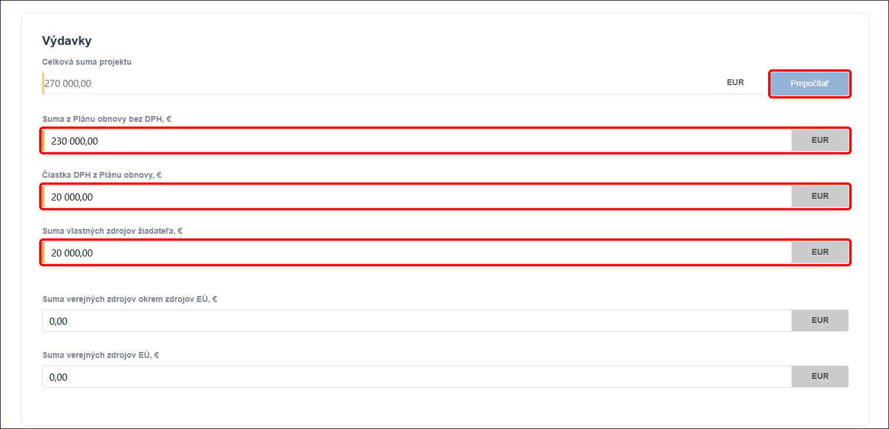
V časti Zmluva môžeme vyplniť polia ako Číslo zmluvy, Dátum platnosti zmluvy, Dátum uzavretia zmluvy, Dátum zverejnenia zmluvy v CRZ a Link CRZ. Zároveň v tejto časti môžeme nahrať prílohu zmluvy tak, že klikneme na tlačidlo Vyberte súbory a vyberieme súbor z nášho zariadenia.
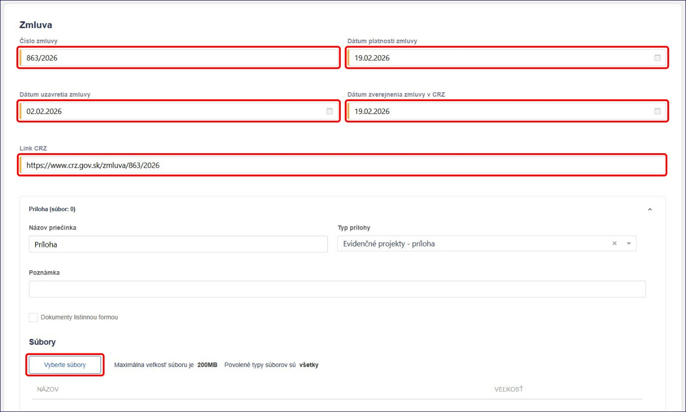
Upozornenie! Pokiaľ sme nastavili stav projektu Zazmluvnený, údaje o zmluve musíme uviesť tiež.
Pre pridanie Prijímateľa klikneme na tlačidlo Pridať.
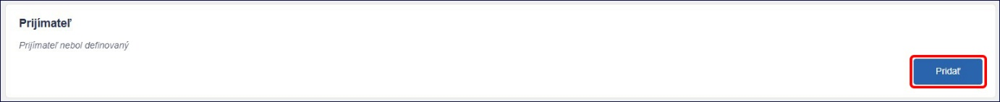
Označíme organizáciu a do poľa Výber organizácie uvedieme názov alebo IČO organizácie, ktorú chceme pridať. Systém ISPO spárovaný s RPO navrhne zoznam organizácií, z ktorých si vyberieme požadovanú a potvrdíme tlačidlom Pridať.
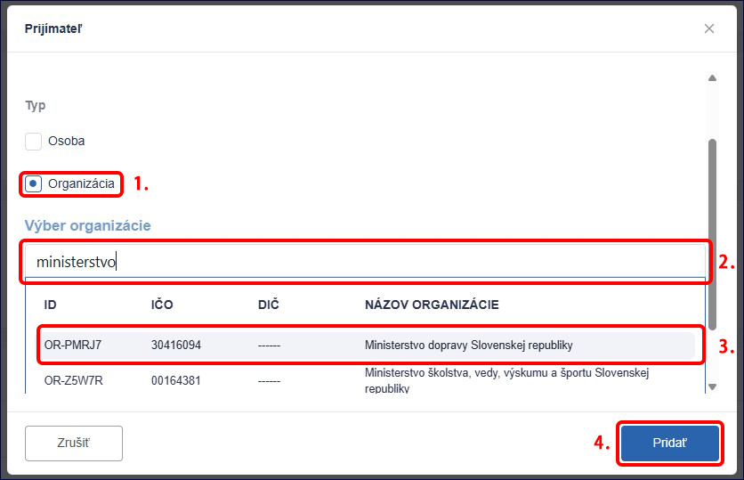
Takto pridaný prijímateľ sa zobrazí v základnom tvare, systém však na pozadí dotiahne všetky údaje o organizácii. V časti Poznámka môžeme uviesť doplňujúce údaje k projektu. Následne klikneme na tlačidlo Pridať, čím potvrdíme vytvorenie evidenčného projektu.
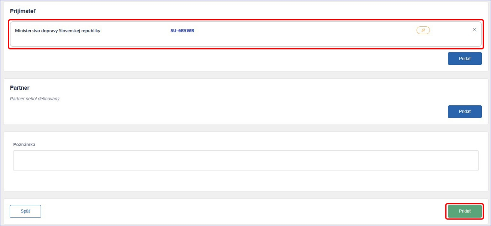
Takto vytvorený projekt sa nachádza v zozname Projekty vždy na poslednom mieste.
Pre vyhľadanie evidenčných projektov v zozname Projekty môžeme použiť filter Typ projektu, v ktorom vyberieme možnosť Evidenčný projekt. Zároveň musíme zakliknúť možnosť And tak, aby bola označená červenou farbou. Filtrovať môžeme aj pomocou módu spracovania Import a ISPO.
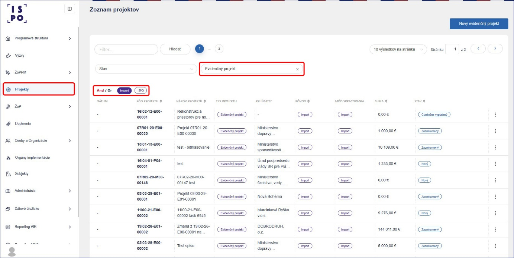
7.2) Vytvorenie internej žiadosti o platbu
Na to aby bolo možné vytvoriť internú ŽoP k evidenčnému projektu je potrebné, aby bol projekt v stave Zazmluvnený. V detaile evidenčného projektu v záložke Žiadosti o platbu sa nachádza zoznam žiadostí o platbu, ktoré boli zaevidované k danému projektu. Ak je zoznam prázdny, k projektu ešte nebola vytvorená žiadna ŽoP. Pre vytvorenie novej ŽoP klikneme na tlačidlo Vytvoriť žiadosť o platbu.
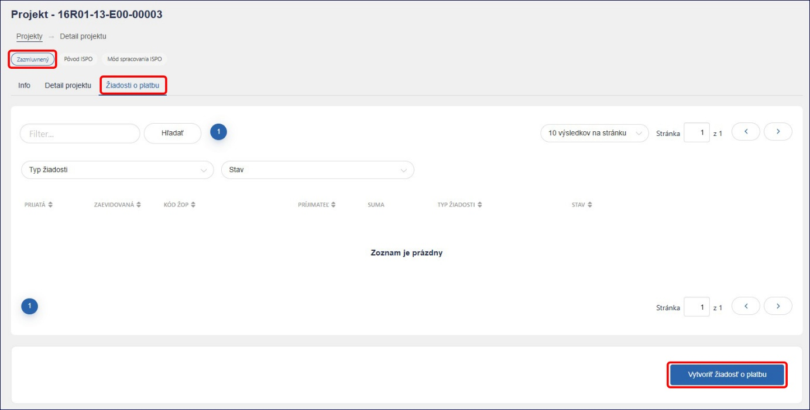
Po otvorení modálneho okna v poli Typ žiadosti vyberieme typ ŽoP.
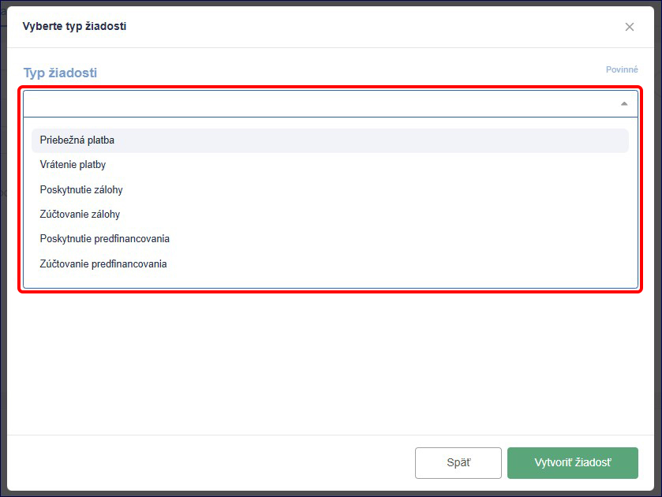
Po výbere jednej z možností napr. Priebežná platba/Refundácia môžeme uviesť, či sa jedná o záverečnú žiadosť o platbu. Následne klikneme na tlačidlo Vytvoriť žiadosť.
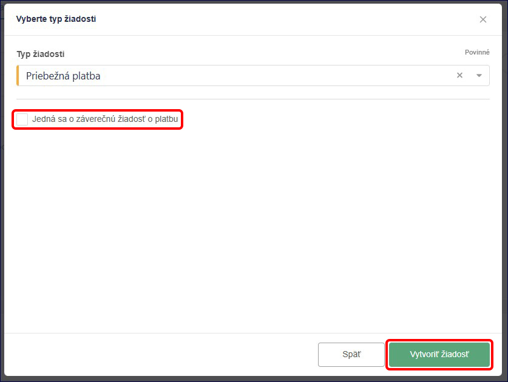
Otvorí sa detail ŽoP v stave Rozpracovaná s kódom rozpracovanej ŽoP, vzorovo IRZ-260220-000752. Po zaevidovaní ŽoP sa tento kód zmení na štandardný kód žiadosti. Záložka Info pozostáva zo všeobecných údajov o prijímateľovi a údajov o projekte.
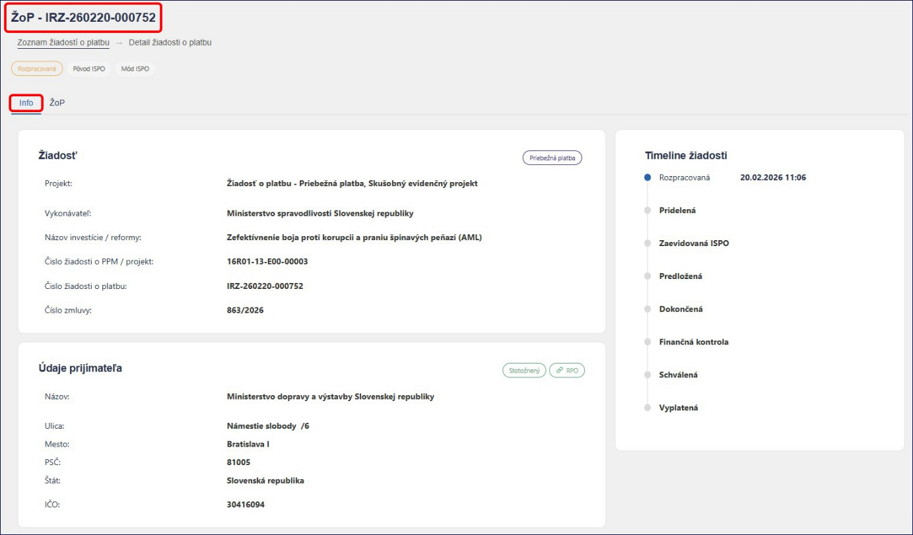
Záložka ŽoP je rozdelená do jednotlivých sekcií. Kliknutím na jednotlivé sekcie sa otvorí ich detail. Tlačidlo Odoslať žiadosť je zablokované, pokiaľ nevyplníme všetky povinné údaje.
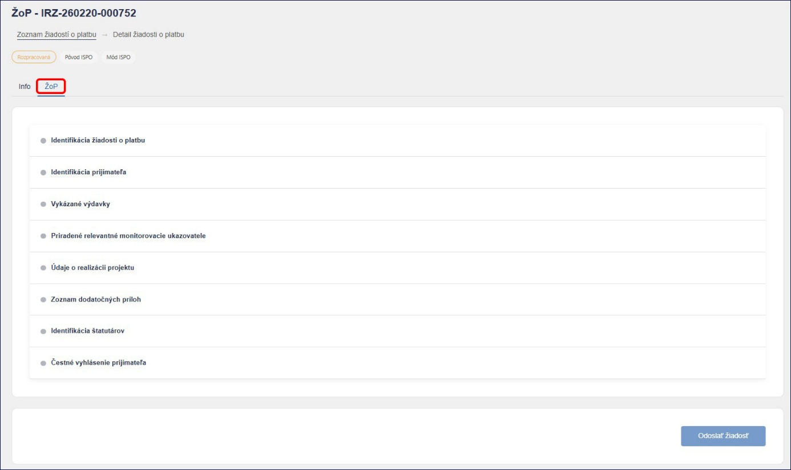
7.2.1) Sekcie Identifikácia žiadosti o platbu a Identifikácia prijímateľa sú automaticky vyplnené. Ide o všeobecné informácie o žiadosti a prijímateľovi.
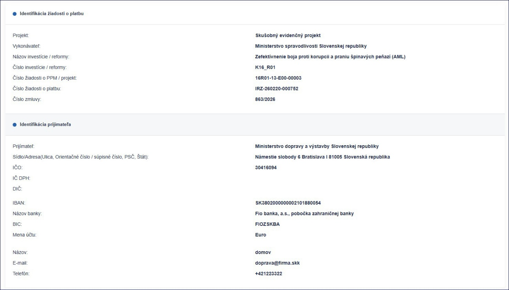
7.2.2) Tretia v poradí je sekcia, ktorej názov a obsah závisí od typu ŽoP.
V prípade typu ŽoP Poskytnutie zálohy sa táto sekcia volá Poskytnutie zálohy. V tejto sekcii vyplníme polia ako Suma z Plánu obnovy bez DPH, € a Čiastka DPH z Plánu obnovy, €, prípadne môžeme doložiť prílohu. Následne klikneme na tlačidlo Uložiť.
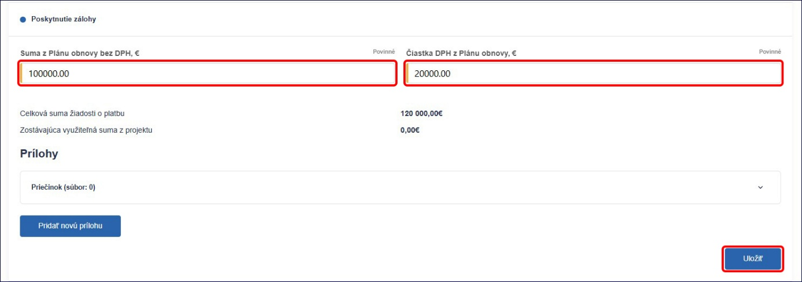
V prípade typu ŽoP Vrátenie sa táto sekcia volá Vrátenie. Vyplníme v nej polia ako Suma z Plánu obnovy bez DPH, € a Čiastka DPH z Plánu obnovy, €, prípadne môžeme doložiť prílohu. Následne klikneme na tlačidlo Uložiť.
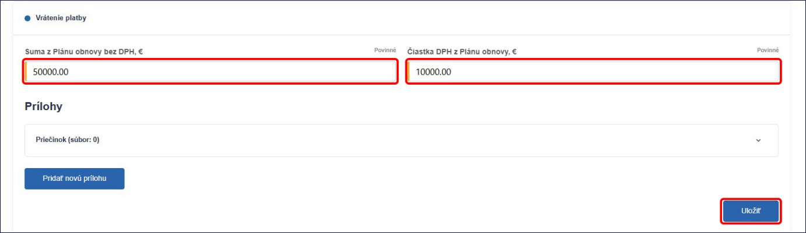
V prípade typov ŽoP ako Priebežná platba/Refundácia, Zúčtovanie zálohy, Poskytnutie predfinancovania a Zúčtovanie predfinancovania sa sekcia v poradí nazýva Vykázané výdavky. Pre pridanie nového výdavku klikneme na tlačidlo Pridať výdavok.
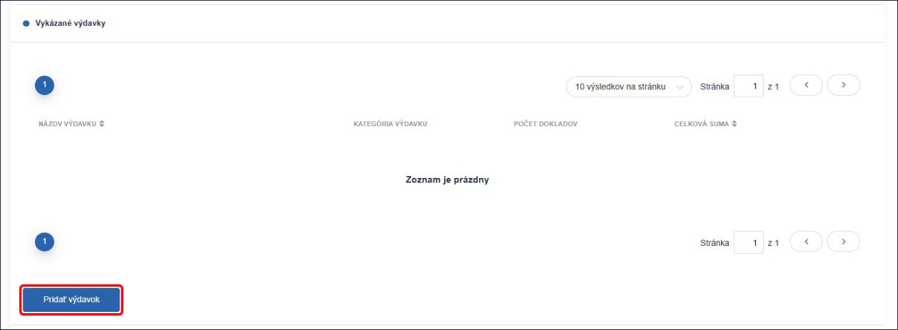
V modálnom okne uvedieme Názov výdavku a klikneme na tlačidlo Vytvoriť.
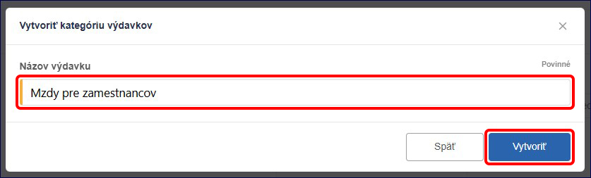
Takto vytvorený výdavok sa zobrazí v zozname výdavkov. Cez tlačidlo Tri bodky na výdavku ho môžeme premenovať, odstrániť alebo sa dostať do jeho detailu na zoznam dokladov. Na zoznam dokladov sa dostaneme aj kliknutím na daný výdavok.
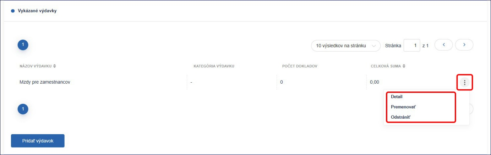
V prípade, že ešte nebol pridaný žiadny doklad k výdavku, zoznam dokladov je prázdny. Pre pridanie dokladu klikneme na tlačidlo Nový doklad k výdavku.
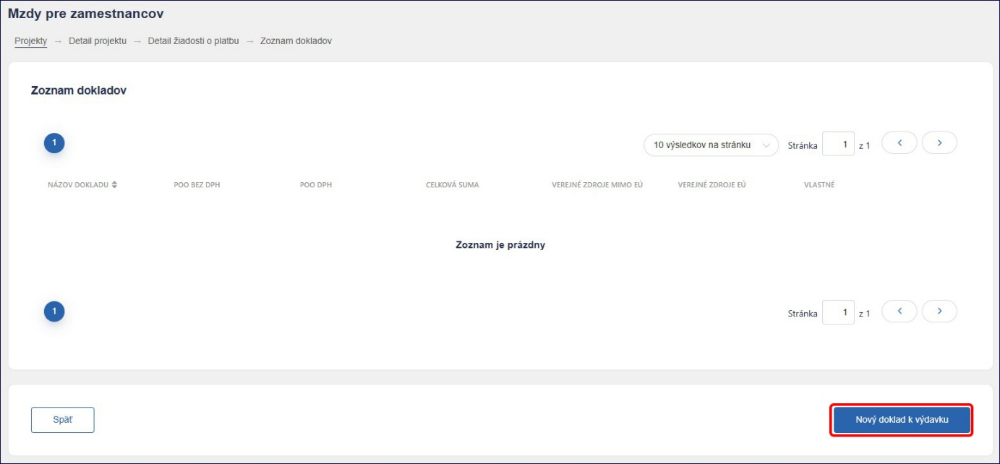
V nasledujúcej obrazovke pre zadávanie údajov nového dokladu nahráme prílohu k dokladu a vyplníme polia ako Názov dokladu, Číslo dokladu a Dátum úhrady.
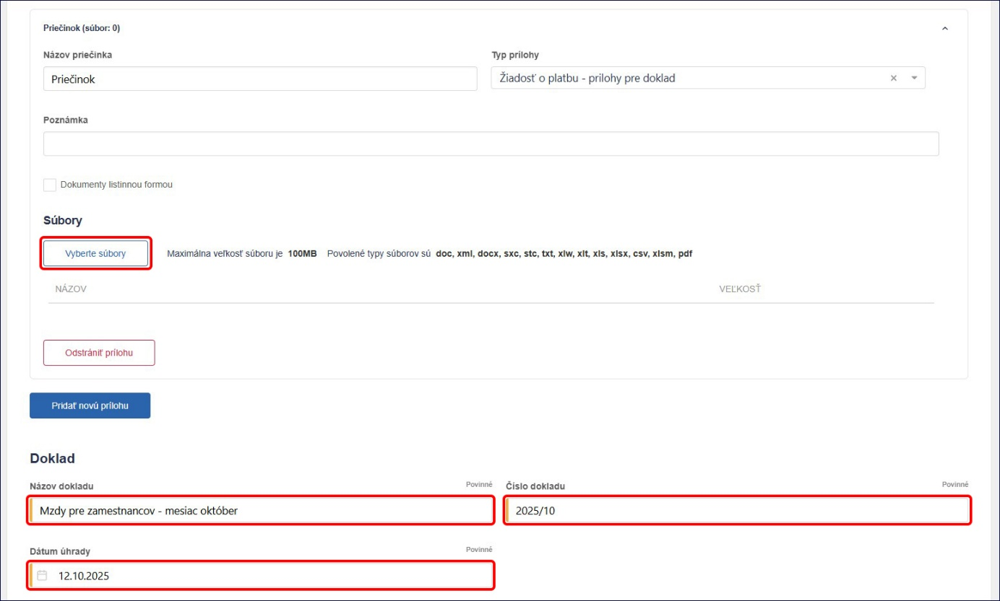
Následne zvolíme typ výdavku Mzdový, Tovary a služby a Iné. Ak vyberieme výdavok Mzdový uvedieme sumy do polí POO bez dph a pole Celková suma sa vypočíta automaticky. Následne vyplníme aj polia ako Verejné zdroje mimo EÚ, Verejné zdroje EÚ a Vlastné zdroje a to aj v prípade, že sú nulové.
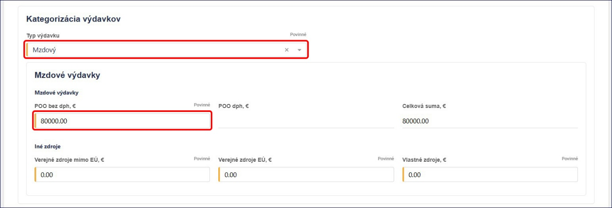
Vyplniť môžeme Údaje k zmluve ak sú relevantné.

V prípade interných ŽoP sa polia Dodávateľ a Subdodávateľ nevypĺňajú. Pre pridanie dokladu klikneme na tlačidlo Uložiť.

Takto pridaný doklad sa dostane do zoznamu dokladov. Pokračovať môžeme pridaním ďalších dokladov alebo sa cez tlačidlo Späť môžeme vrátiť na zoznam výdavkov.
7.2.3) Vyplniť môžeme aj sekciu Údaje o realizácii projektu. Klikneme na tlačidlo Upraviť.
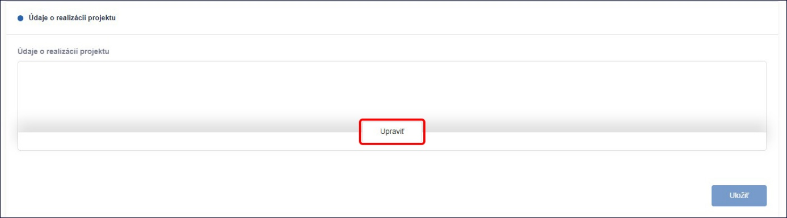
V modálnom okne do textového okna napíšeme text o realizácii projektu. Následne klikneme na tlačidlo Zatvoriť.
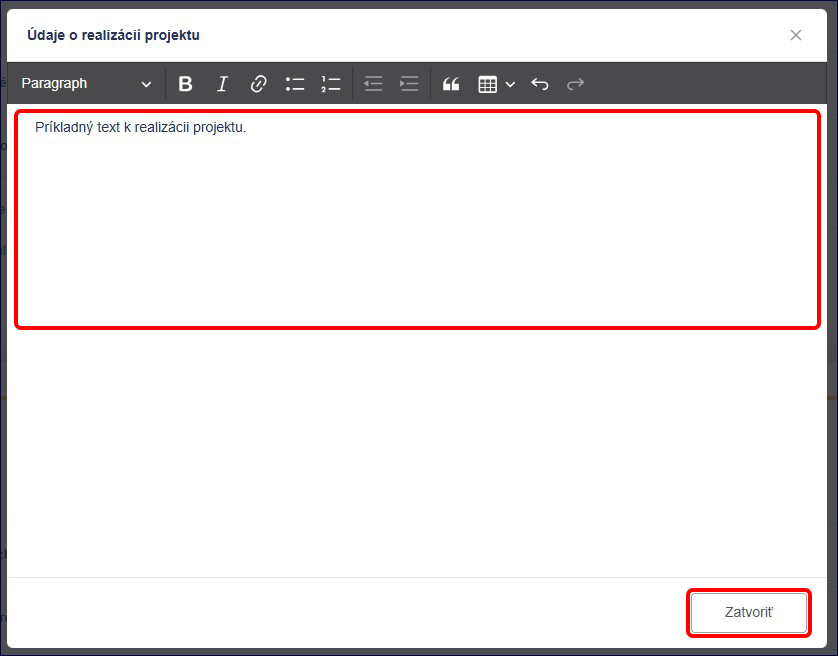
Následne text uložíme kliknutím na tlačidlo Uložiť.
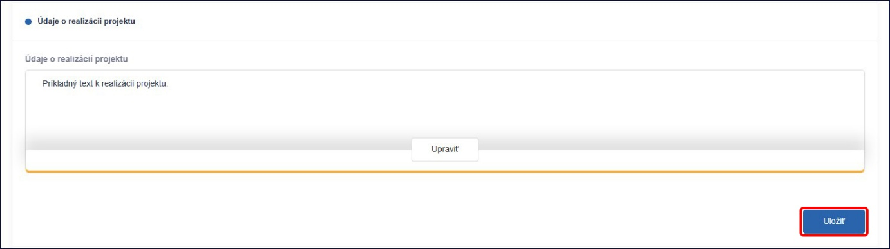
7.2.4) V sekcii Zoznam dodatočných príloh môžeme nahrať prílohy k ŽoP. Po nahratí prílohy klikneme na tlačidlo Uložiť.
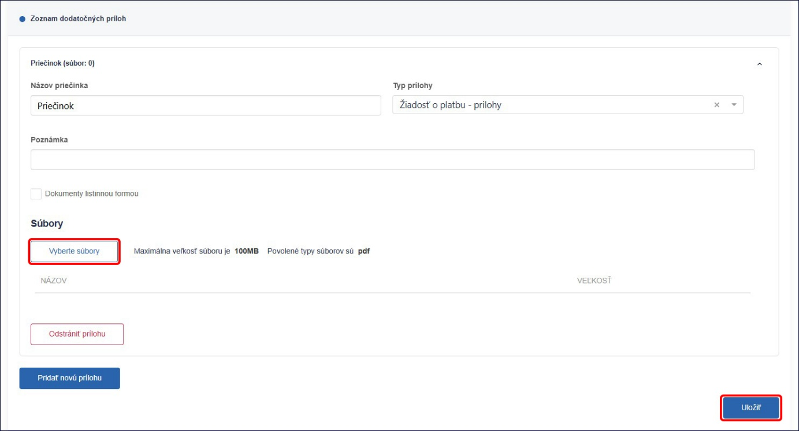
7.2.5) V sekcii Identifikácia štatutárov označíme štatutára označením zaškrtávacieho políčka a potvrdíme pravdivosť tohto údaju aktivovaním prepínacieho tlačidla. Klikneme na tlačidlo Uložiť.
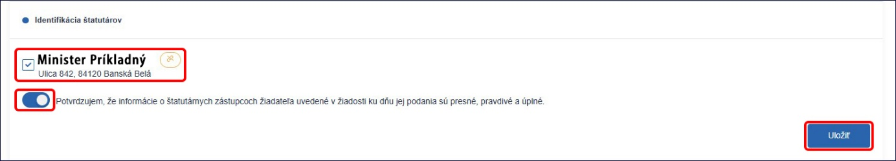
7.2.6) V sekcii Čestné vyhlásenie prijímateľa aktivujeme prepínacie tlačidlo. Ak sme všetko správne vyplnili a uložili, sprístupní sa aj tlačidlo Odoslať žiadosť. Kliknutím naň úspešne zaevidujeme internú ŽoP na evidenčnom projekte.
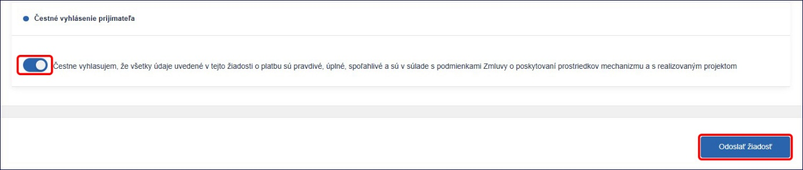
Takto pridaná ŽoP sa zobrazí v zozname ŽoP -> Všetky ŽoP na poslednom mieste. Vidieť ju môžeme aj v zozname ŽoP v detaile evidenčného projektu.